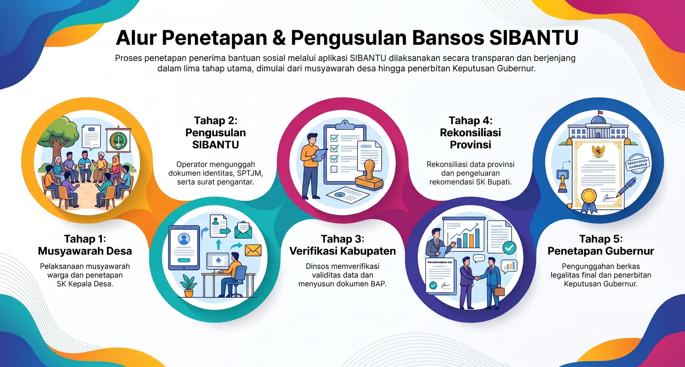

Alur pengusulan sampai penetapan
Delapan langkah, dari sosialisasi kriteria di desa sampai penetapan penerima oleh Gubernur. Warga hanya hadir pada saat pencairan.
Tahapan
Siapa mengerjakan apa
Desa menyiapkan dan mengusulkan, kabupaten memverifikasi lewat BAP, provinsi merekonsiliasi dan menetapkan.
Status tahap berjalan
Tahap III · 2026
20 Oktober 2026 – 28 November 2026
BerlangsungIstilah
SPTJM Kolektif
Pernyataan tanggung jawab mutlak kepala desa bahwa calon memenuhi kriteria.
BAP
Berita Acara Pemeriksaan hasil verifikasi satu desa/kelurahan.
Rekonsiliasi
Pencocokan data kabupaten dengan provinsi.
- Pemerintah desa & warga
Sosialisasi kriteria calon penerima
Kriteria disosialisasikan di tingkat desa/kelurahan sebelum musyawarah.
Warga mengetahui syarat dan cara menyampaikan keberatan.
- Kepala desa/lurah
Musyawarah dan SK Kepala Desa/Lurah
Musyawarah menentukan calon penerima; hasilnya dituangkan dalam SK Kepala Desa/Lurah.
SK menjadi dasar pengusulan, bukan daftar lisan.
- Operator SIBANTU desa
Pengunggahan data
Operator yang ditunjuk mengunggah data calon penerima beserta dokumen pendukung melalui aplikasi SIBANTU.
Dokumen: fotokopi/KK dan KTP, Pakta Integritas sesuai form, tangkapan layar Desil hasil cek Bansos, serta SPTJM Kolektif dari Kepala Desa/Lurah.
- Operator SIBANTU desa
Surat pengantar ke kabupaten/kota
Bersamaan dengan pengunggahan, surat pengantar pengusulan dikirim kepada Dinas Sosial Kabupaten/Kota.
Pengusulan belum diproses sebelum surat pengantar diterima.
- Verifikator kabupaten/kota
Notifikasi dan verifikasi
Verifikator memastikan kesesuaian kriteria dan validitas identitas calon penerima.
Data yang tidak sesuai dikembalikan ke operator desa.
- Dinas sosial kabupaten/kota
Berita Acara Pemeriksaan (BAP)
Bila seluruh data satu desa/kelurahan disetujui, BAP disusun dan diteruskan kepada provinsi.
BAP menjadi lampiran resmi pada rekonsiliasi.
- Dinas sosial provinsi
Rekonsiliasi dan verifikasi ulang identitas
Provinsi mencocokkan data dengan kabupaten/kota serta memverifikasi ulang identitas.
Mencegah penerima ganda antar-kabupaten.
- Dinas sosial provinsi
Penetapan Gubernur
Berkas legalitas final diunggah dan Keputusan Gubernur diterbitkan sebagai dasar penyaluran.
Warga yang ditetapkan menerima undangan melalui desa/kelurahan.

Jadwal
Jadwal penyaluran per tahap
| Tahap | Mulai | Selesai | Status |
|---|---|---|---|
| Tahap III | 20 Oktober 2026 | 28 November 2026 | Berlangsung |
Tanggal per kabupaten dapat berbeda. Tanggal yang berlaku adalah yang tercantum pada surat undangan.
Kendala